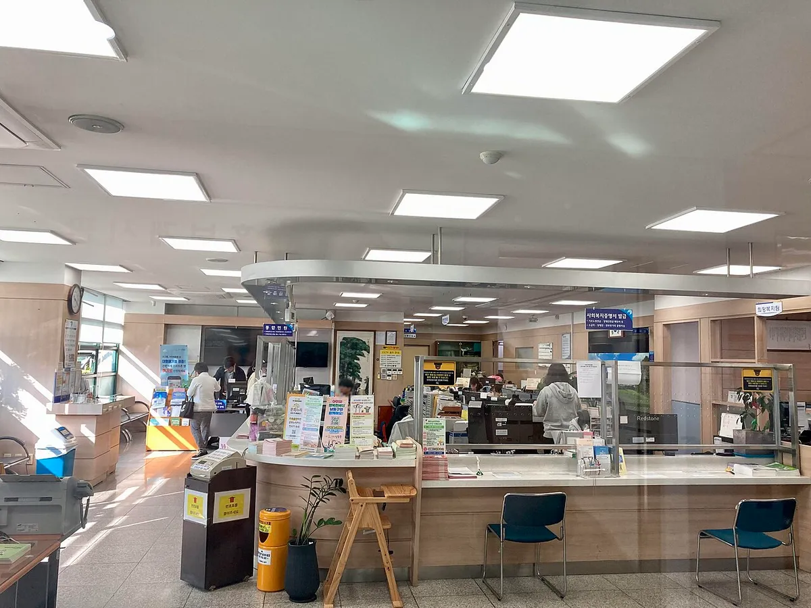
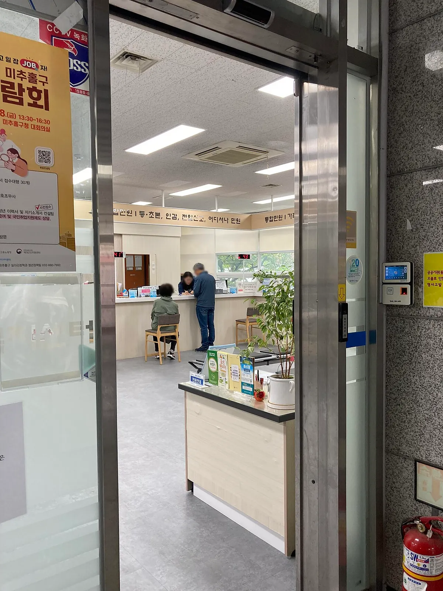

▲ 주민등록 등·초본은 행정복지센터 민원창구에서 발급받을 수 있다 ⓒ Narubaru7 / Wikimedia Commons (CC BY 4.0)
"등본만 떼도 재혼 사실이 드러난다던데, 앞으로는 어떻게 되나?" 2026년 10월 29일부터 주민등록표 등·초본에서 세대주와의 관계가 표시되는 방식이 바뀐다. 행정안전부가 알린 개정 주민등록법 시행령의 핵심은 세대주의 배우자를 제외한 민법상 가족을 구체적인 관계 대신 '세대원'으로, 가족이 아닌 사람을 '동거인'으로 적는 것이다. 다만 필요하면 기존처럼 상세한 관계를 표시한 서류를 선택해 발급받을 수 있다. 정부 보도와 언론 보도를 교차해 정리했고, 확인하지 못한 부분은 그대로 표시했다. (확인 기준일 2026년 10월 1일, 시행 전 기준)
1. 무엇이 바뀌나 — 표기 전후 비교
지금까지 주민등록 등·초본에는 세대주를 기준으로 '자녀', '배우자의 자녀', '부', '모', '삼촌'처럼 관계가 구체적으로 적혔다. 그래서 재혼가정은 등·초본만 제출해도 '배우자의 자녀'나 '계부·계모' 같은 표기를 통해 가족사가 간접적으로 드러날 수 있다는 지적이 있었다. 개정 후 일반 표기는 다음과 같이 달라진다. (정부 보도 및 언론 보도 종합)
| 구분 | 현재(~10월 28일) | 10월 29일부터 일반 표기 | 상세 표기 선택 시 |
|---|---|---|---|
| 세대주의 배우자 | 배우자 | 변경 대상에서 제외(보도 기준) | 기존과 같음 |
| 세대주의 자녀 | 자녀 | 세대원 | 자녀 |
| 배우자의 자녀 | 배우자의 자녀 | 세대원 | 배우자의 자녀 |
| 세대주의 부모 | 부, 모 | 세대원 | 부, 모 |
| 삼촌 등 그 밖의 민법상 가족 | 삼촌 등 | 세대원 | 삼촌 등 |
| 가족이 아닌 동거인 | 확인하지 못함 | 동거인 | 확인하지 못함 |
표의 '배우자' 행은 "세대주 본인과 배우자를 제외한 민법상 가족"을 세대원으로 표시한다는 보도 내용을 근거로 정리한 것이다. 가족이 아닌 사람의 상세 표기 방식은 공식 자료에서 확인하지 못했다. 등재 순서도 바뀐다. 기존에는 세대주, 배우자, 세대주의 직계존비속 순으로 기록됐다고 보도됐다(세부 순서 규칙은 확인하지 못했다). 앞으로는 세대주 배우자의 직계존비속을 세대주의 직계존비속과 같은 순위로 묶고, 일부 보도는 나이 순이라고 전한다(공식 문구는 확인하지 못했다). 정책브리핑 바로가기 외국인은 한글 성명과 로마자 성명이 함께 표기된다는 별도 보도도 있었으나, 위 정책브리핑 페이지에서는 이 내용을 확인하지 못했다.
▲ 등·초본은 행정복지센터 민원창구에서도 발급받을 수 있다 (인천 만수1동 행정복지센터 민원실) ⓒ Narubaru7 / Wikimedia Commons (CC BY 4.0)
2. 왜 바꾸나 — 재혼가정 사생활 보호
주민등록 등·초본은 주소를 증명하는 공적 서류지만 복지·교육·금융 등 여러 행정서비스에서 제출되는 만큼, 필요 이상으로 가족의 민감한 정보가 노출될 수 있다는 문제의식이 배경이다. 행정안전부는 재혼가정 등에서 서류를 제출하는 과정에서 원하지 않는 가족관계가 드러날 수 있다는 점을 개선 필요성으로 제시했고, 서류 제출 목적에 필요한 정보만 제공할 수 있도록 선택권을 넓히겠다는 취지라고 보도됐다.
9월 9일에는 행정안전부, 성평등가족부, 한국건강가정진흥원이 변경 내용을 알리기 위한 업무협약을 체결했고, 전국 245개 가족센터 등을 통해 달라지는 제도를 안내할 계획이라고 한다. 협약과 함께 SNS 콘텐츠·홍보자료 등을 활용해 안내할 계획이라고 전해진다. 뉴스핌 보도 바로가기
📍 '두 종류의 증명서'가 생기는 것은 아니다
한국AI부동산신문은 이번 개정을 등·초본이 완전히 두 종류의 증명서로 나뉘는 것으로 이해해서는 안 되고, 핵심은 세대주와의 관계를 일반 또는 상세로 선택해 표시하도록 한 것이라고 설명했다. 같은 서류를 어떤 방식으로 표시할지 고르는 구조다.
3. 불이익은 없나 — 관계 증명이 필요할 때 상세 표기 선택법
일반 표기 서류만으로는 해당 세대원이 세대주의 부모인지 자녀인지 알 수 없다. 그래서 전세·매매 계약, 대출·보증, 학교·복지 서류처럼 구체적인 관계를 확인해야 하는 곳에서는 일반 표기 서류가 받아들여지지 않을 수 있다. 이를 위해 정부는 선택권을 남겼다. 행정안전부 설명에 따르면 주민등록표 열람이나 등·초본 교부를 신청할 때 '상세' 표기를 선택하면 부·모, 자녀 등 구체적 관계가 표시되며, 상세 표기를 선택하는 경우에는 신청서에 '용도 및 목적'을 작성하도록 했다(이해관계자 신청 시 작성 의무는 이번에 확인하지 못했다).
| 상황 | 권장 방향 | 근거·유의점 |
|---|---|---|
| 단순 주소 증빙 | 일반 표기 | 가족관계 노출을 줄이는 것이 제도의 취지 |
| 가족관계 확인이 필요한 업무 | 상세 표기 | 제출기관이 요구하는 표시 항목을 먼저 확인 |
| 어느 쪽인지 모를 때 | 제출기관에 사전 문의 | 행정안전부: "어떤 서식으로 발급받으셔야 하는지 발급기관에 꼭! 사전 확인하세요!" |
| 상세 선택 시 절차 | 용도·목적 기재 | 신청서에 작성하도록 했다고 보도됨 |

▲ 상세 표기가 필요하면 신청서에 용도와 목적을 적어 요청한다 (인천 만수3동 행정복지센터 1층 민원실) ⓒ Narubaru7 / Wikimedia Commons (CC BY 4.0)
한 가지 주의할 점은 일반 표기 서류에 '세대원'이라고 적혀 있다는 이유만으로 부모·자녀 같은 구체적 관계를 판단해서는 안 된다는 것이다. 부동산 매매·임대차나 대출 과정에서 서류를 받는 쪽도 마찬가지다. 가족관계를 다른 서류로 증명해야 하는지는 제출처마다 다르므로 공식 자료만으로 단정할 수 없다.
4. 발급 방법 — 주민센터와 정부24
등·초본은 행정복지센터(주민센터) 민원창구에서 신청서를 쓰고 발급받는 방식이 기본이며, 정부24 등 온라인 발급도 이용되어 왔다. 이번 개정에서 일반·상세 선택은 "열람이나 교부 신청 과정"에서 하는 것으로 안내됐다. 다만 정부24와 무인민원발급기에서 상세 표기를 선택하는 구체적 화면과 절차, 온라인 상세 발급 시 용도·목적 입력 방식은 이번 조사에서 공식 자료로 확인하지 못했다. 시행 후 정부24 안내문과 관할 행정복지센터 공지를 확인하는 편이 안전하다.

▲ 등·초본·인감 등 민원 업무를 보는 행정복지센터 민원실 (인천 학익2동 행정복지센터, 사진 속 인물은 뒷모습·원거리) ⓒ Narubaru7 / Wikimedia Commons (CC BY-SA 4.0)
✅ 10월 29일 이후 서류를 낼 때 체크리스트
· 제출처가 일반 표기로 충분한지, 상세 표기를 요구하는지 먼저 확인
· 상세가 필요하면 신청 때 '상세' 선택과 용도·목적 기재
· 10월 28일 이전에 발급받아 둔 서류는 시행 후 효력을 공식 자료에서 확인하지 못했으므로 제출처 기준을 확인
· 가족관계가 중요한 업무라면 제출처가 요구하는 증빙서류 종류를 사전에 문의
5. 자동차 관련 서류와의 접점 — 확인된 범위
자동차 등록·양도·보험 서류에서 주민등록 등·초본이나 가족관계 증명이 쓰이는 경우가 있다. 다만 이번 개정이 자동차 등록·이전, 보험 가입, 자동차세·과태료 감면 신청 서류의 요구 방식을 바꾼다는 공식 설명은 확인하지 못했다. 자동차 사이트 독자에게 확실히 해당하는 것은 "가족 간 증여·상속이나 가족 한정 보험 조건처럼 관계 확인이 필요할 때 일반 표기만으로는 관계가 보이지 않을 수 있으니, 제출처 요구 서식을 먼저 확인하라"는 일반적인 주의 정도다. 이는 공식 확인이 아닌 추정이며, 필요한 서류는 해당 기관(차량등록사업소, 보험사)에 문의해야 한다.
▲ 동 주민센터에서 등·초본 발급을 받을 수 있다 (서울 송파1동 주민센터 외관) ⓒ Mobius6 / Wikimedia Commons (CC BY-SA 4.0)
6. 자주 묻는 질문
| 질문 | 답변(확인된 범위) |
|---|---|
| 언제부터 바뀌나? | 2026년 10월 29일 시행, 전산 시스템 정비를 거쳐 적용 |
| 모든 가족이 '세대원'으로 나오나? | 일반 표기에서는 세대주 본인과 배우자를 제외한 민법상 가족이 세대원 |
| 동거인은 누구인가? | 가족이 아닌 경우 '동거인'으로 표기 |
| 기존처럼 받을 수 있나? | 민원인이 희망하면 상세 표기 발급 가능, 용도·목적 작성 |
| 등본·초본 모두 해당하나? | 정부 설명이 "등·초본"으로 안내돼 둘 다 포함으로 보이나, 서류별 세부 적용 범위는 확인하지 못함 |
| 이미 뗀 서류는? | 효력은 확인하지 못함, 제출처에 문의 |
| 가족관계증명서도 바뀌나? | 이번 보도는 주민등록 등·초본 표기만 다루며 가족관계증명서 변경 언급은 확인하지 못함 |
7. 요약
2026년 10월 29일부터 주민등록 등·초본의 일반 표기에서는 세대주 배우자를 제외한 민법상 가족이 모두 '세대원', 가족이 아닌 사람은 '동거인'으로 표시된다. 재혼가정의 '배우자의 자녀' 같은 표기가 드러나는 일을 줄이기 위한 개정이다.
구체적 가족관계가 필요하면 '상세' 표기를 선택해 기존처럼 발급받을 수 있고, 이때 신청서에 용도와 목적을 적는다. 정부24의 상세 선택 방식, 이미 발급된 서류의 효력, 자동차 서류와의 관계는 공식 확인하지 못했다.
서류를 내기 전에 제출처가 어떤 표기를 요구하는지 먼저 물어보자. (기준일 2026년 10월 1일)